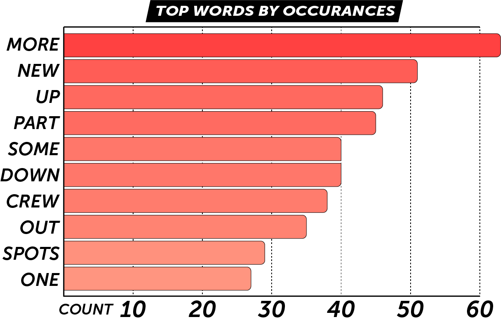
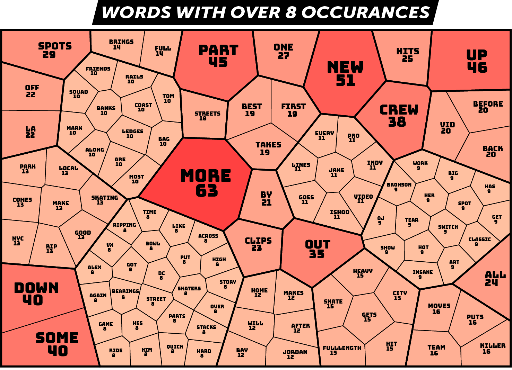
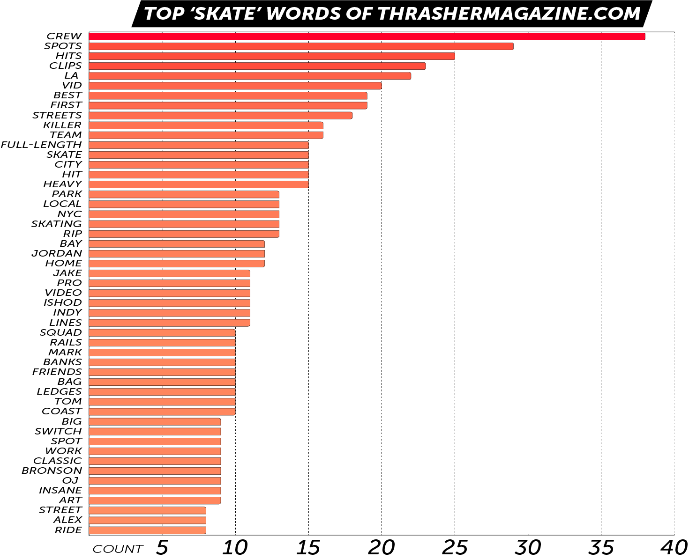
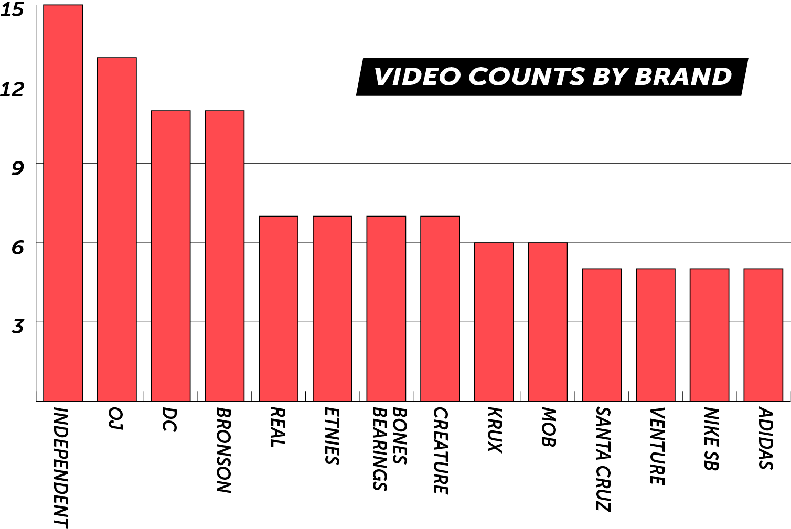
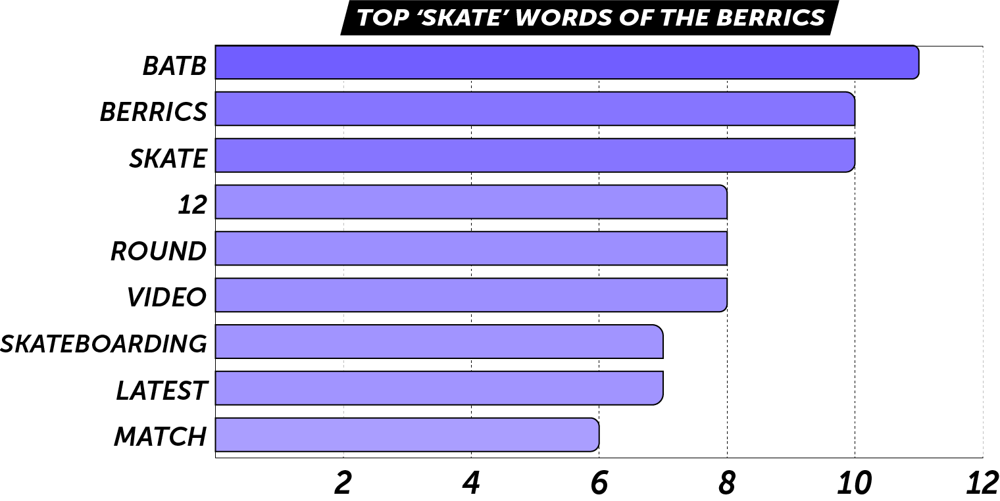

Describing the contents of a skate video in a compelling way is not easy. With very few exceptions, every skate video is pretty much the same. Aside from calling out spots, stunts, sponsors, and skaters, there isn’t too much left to talk about. And there are only so many synonyms for "gnarly" and "smooth" available.
Yet the constant churn on new content requires a virtually bottomless need for fresh text to accompany it. Whether to entice a viewer’s interest with a topic sentence, give a little added context, or just keep the homepage looking consistent, every video out there has some sort of caption. And assuming these video descriptions aren’t auto-generated (but how cool would it be if if they were), we at 4Ply wanted to salute the brave copywriters who put it down, day after day, the only way we know how: with a statistical analysis.
METHODOLOGY
Our dataset consists of most of the video captions taken from the homepage of thrashermagazine.com from the first day of 2022 up to the China Banks retrospective video that was published on July 15th. We did not record captions for non-video articles or Skatelines. This created a total of 402 captions from 196 days, an average of 2.05 video captions per day! Additionally, we logged video names and brands when specific brands were applicable.
The words from all these captions were run through our patented 4Ply algorithms where we could then extract their various observational juices.
WORD ‘EM UP
Our survey of 402 Thrasher video captions yielded us a total of 8667 words. This gives us an average caption length of about 22 words. With a standard deviation of 6.9 words, most of the captions in the 15 to 29 word length.
The longest video caption was for the Rare Enough documentary, coming in at a beefy 51 words. The shortest were a mere 10 words long, which happened 6 times.
TOP WORDS
Among this 8667 word dataset, there was a count of 2765 unique words.
From these 2765 different words, 1768 of them appeared only once. In fact, if we are to look at a list of words that appear 5 or more times, the list gets whittled down to 260 distinct words.
So, what word is used the most in Thrasher video descriptions?
You’ll be thrilled to learn it is the often utilized definite article "the", with a massive 454 occurrences. The next is the coordinating conjunction "and" with 398. And thus we continue with indefinite articles, third person pronouns, and vague syncategorematic (forming a meaningful expression only in conjunction) words taking up the top spots. In fact, these types of words make up the top 12 words in our study. Boring, but typical of complete sentence communications.
The dominance of these garbage words in our language made things dull enough that we were forced to clean our data of 28 different words of this nature to reveal the more compelling results. These types of words are so prevalent, in fact, that just those 28 removed words account for 32% (2749 occurrences) of the words in the dataset!
From this cleaned dataset, here are the top 10 words found in Thrasher’s video descriptions:

To widen the scope of the analysis, let's check out all 109 of the words with 8 or more occurrences by means of a nifty Word Map. Open the image in a new window if you want to zoom in.

Keep in mind that different conjugations of a verb are counted as different words. So, for example, "unleash" had a count of 6 and, separately, "unleashes" has a count of 2.
In the interest of shedding even more light upon modern skateboarding lingo, we selected out the top 50 words that we would consider somewhat skate-centric and graphed those out for you:

As you can see, Thrasher is pretty stoked on the "crew" right now, with that word appearing 38 times (however, Thrasher is not very stoked on "stoke", with only 2 hits each for the words "stoke" and "stoked").
We also observe Thrasher going big with all-time classic words like "spots", "clips", "streets", "team", and "full-length" (which Thrasher always spelled with a hyphen).
The most common skate-speak adjective (not including the word "best") was easily "killer" with a count of 16. Only once was it used in the phrase "all killer, no filler".
The word "vid" was used 20 times, while "video" made 11 appearances (not including the one use of "video-mag").
Some words and phrases that didn’t make it past the count of 8 but you might expect to be common:
- "smooth" - 4
- "gnarly"- 0 (!)
- "get buck" - 0
- "next level" - 0
- "fam" - 1
- "rippers" - 2
- "this one" - 2
- "to date" - 2
- "around the globe" - 1
- "crust" - 4
- "crusty" - 3
- "thrasher" - 1
- "phelps" or "phelper" - 0 on both
- "the mag" - 3
- "shredding" - 1
- "shreddin'" - 1
- "vert" - 5
If you are curious as to the Thrasher video description word count of any specific words or phrases, DM us on the 4Ply Insta and we'll check it out for you.
PLACES
The most common place reference was "LA", with 22 callouts, followed by "NYC" with 13. Never were they phrased as "Los Angeles" or "New York City". There was only 1 mention of "San Francisco" (and no "SF"s) but 13 counts of "The Bay".
The word "east" appears 6 times (but only once as "east coast"), "west" 3 times (all 3 as "west coast", and "coast to coast" also came up 3 times. While we’re pointing out directions, "north" was mentioned 4 times and "south" had a count of 5.
The most named specific spot was the "China Banks", with 5 mentions. Nothing else was even close. "Pulaski" was named twice.
NAMING NAMES
One of the biggest draws of a skate video is, of course, who is doing the skating. So it should come as no surprise that nearly every video caption featured at least one skater name, and often several. A lot skaters were mentioned by first name only, which can make counts a little difficult to easily calculate, but without question the most mentioned skater was Ishod, whose name came up 11 times.
Other top names that came up in our Word Counts include "Jordan" (12 counts including a lot of references to our boy Gordo, plus Trahan, Maxham, and even the titular country of Jordan), "Jake" (11 counts including Wooten, Anderson, Johnson, Hayes, and even Rupp among others), "Tom" (10 counts with a lot of Tom K, plus Remillard and Asta) and "Alex" (8 counts, but interestingly all 8 are different Alexes).
At first it seemed that "Mark" was mentioned a lot (10 times), but nearly half of those was using "mark" as a verb (i.e. "The Gonz put his mark on some limited threads…").
When cross-referenced to our skater name analysis of the Quartersnacks Top 10, this trend holds true. It’s a statistics-backed fact that a lot of skaters have a first name that starts with the letter "J".
BRANDED CONTENT
While we here at 4Ply can’t claim to know the inner workings of Thrasher, based on our data it would appear that the content connected to certain brands has a tendency to get published more often than others. It is almost as if some sort of preferential transactional system is in place. Either that or the folks running Thrasher’s website really, really like the content NHS-affiliated brands are putting out.

The NHS family of brands is all over that homepage with Indy, OJs, Bronson, Creature, Santa Cruz, MOB, and even Krux getting in the mix. DLX also has some presence with Real and Venture making the 5 or more video cut (but surprisingly not Spitfire). While in the shoe game we have DC getting more coverage than Nike SB and Adidas combined.
This holds true when we look back at our Top Words map, with "Indy" being mentioned 11 times, and "Bronson" and "OJ" coming up 9 times each. Note that, additionally, "OJs" came up 2 times as well.
BONUS CAPTIONS
For fun we also quickly rounded up 100 video captions from the Berrics homepage from May and June of 2022 and ran it through our code. We found that Berrics video descriptions were typically a bit shorter, averaging about 15 words (with a standard deviation of 5.9 words). The longest description was 32 words (Sunny Suljic vs Lil Dre in the Influencer Bracket for BATB12), and the shortest was just 4 words, which happened twice: "‘Bevup’ to get down." and "Dashawn really leveled up."
The Top Words for the Berrics were similar to Thrasher in that the top 12 were all crap like "the", "and", "in", and "to". But here are the top skate-specific words:

To be fair, the Berrics was right in the middle of the years-long BATB12 competition, so that is skewing the results. But even still, a quick brand analysis shows us that 35% of the videos in this admittedly small sample size were for Berrics branded content.
The next most talked about brand on the Berrics that wasn’t the Berrics was Red Bull, with 6 videos.
We also have to mention that the word "influencer" came up 4 times in the Berrics and not once for Thrasher.
THE 4PLY THRASHER CAPTION GENERATOR
All this information hoarding and colorful chart making isn’t just a bunch of pointless exercises created mostly to compensate for our ever diminishing skateboard riding skills. Sure, we now know conclusively that Thrasher uses the word "vid" more often than "video", but what is the point?
Ladies and gentlemen, please take a moment to sample the bottomless skate video options as described by the 4Ply Thrasher Caption Generator.
Utilizing a proprietary algorithm that is constantly scanning video descriptions for structure and content, our video caption generator learns and adapts with each new description you instruct it to create, eventually (in theory) achieving wordsmithing singularity as the ultimate Thrasher video caption attains conciousness.
Or maybe it just shuffles a bunch of words together for our amusement. Either way, try it out.
Shout out to whomever writes the video descriptions at thrashermagazine.com. And shout out to Thrasher for giving us a constant stream of content for free. Truly this is a futuristic wonder world we live in.
If anybody at NHS wants to get ahold of us about some branded 4Ply content, we’d be open to that.